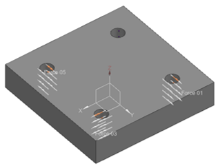
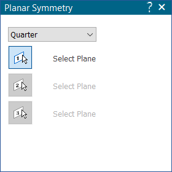
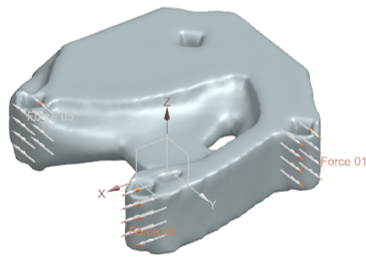
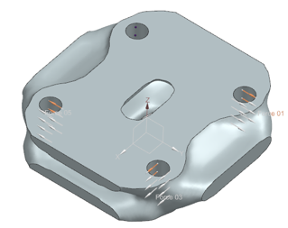

Planar Symmetry
You can constrain the optimized design model to be symmetric about a specified plane. Use the Planar Symmetry command to apply a half, quarter, or one-eighth planar symmetry to an optimized design model.
This command is available based on your Generative Design license type.
Planar Symmetry inputs
When defining a planar symmetry, you use the options on the Planar Symmetry command bar and the dynamic input boxes to specify:
- Planar Symmetry - Types
-
Select the type of symmetry you want to apply for a design model.
- Half
-
The optimized design model should be symmetric with respect to the specified plane.
- Quarter
-
The optimized design model should be symmetric with respect to two orthogonal planes.
- One-Eighth
-
The optimized design model should be symmetric with respect to three orthogonal planes.
- Select Plane
-
Select the reference plane that defines the symmetry plane for an optimized design model.
You must specify one plane for a Half symmetry, two orthogonal planes for a Quarter symmetry, and three orthogonal planes for a One-Eighth symmetry.
The Planar Symmetry constraint gives the best possible symmetric design models. However, the results may vary with the complexity of the model.
Applying a planar symmetry
In this design study, a Quarter symmetry is applied to the design model by selecting the two orthogonal planes. The design study results are compared with and without applying a planar symmetry.

-
The design model is symmetric about the XZ and YZ planes. The force loads applied to a set of holes, make the optimized design model asymmetric about the XZ and YZ planes.
-
Choose Generative Design tab → Shape Constraints group → Planar Symmetry.
-
On the Planar Symmetry command bar, provide the inputs in the order shown. You can change the plane selection by clicking the corresponding step buttons on the command bar.

-
From the drop-down list at the top of the Planar Symmetry dialog box, select Quarter.
-
The Select Plane 1 option is available. Select the first reference plane. Right-click or press Enter for the next plane selection.
-
Now, the Select Plane 2 option will be available. Select the second orthogonal plane. Right-click or press Enter to continue.
-
The Select Plane 3 option becomes available after you select the One-Eighth symmetry type.
Compare the results of solving the study of this design space with and without applying a planar symmetry using the Planar Symmetry command. The results show an optimized design model symmetric with respect to the XZ and YZ planes.
Solution 1 - No planar symmetry

Solution 2 - Quarter symmetry applied

Editing a planar symmetry
The planar symmetry is listed in the Generative Design pane as either Planar Symmetry (Undefined) or Planar Symmetry (Defined).
To edit a planar symmetry, you can double-click the Planar Symmetry (Defined) node in the Generative Design pane, or simply select the Planar Symmetry command again.
To remove a planar symmetry, right-click the Planar Symmetry (Defined) node and choose Delete. This also resets the label to its initial Planar Symmetry (Undefined) state.
How do I
Generative Design workflowGenerative Design example
Suppress individual loads to compare results
Define a physical load condition
Define an operational constraint
Set a maximum displacement
Learn more
Using load casesLook up more details
Fixed constraintPinned constraint
Graphic Symbol Size dialog box
Color dialog box